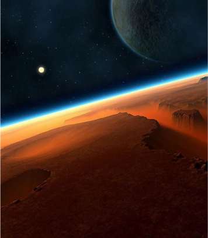
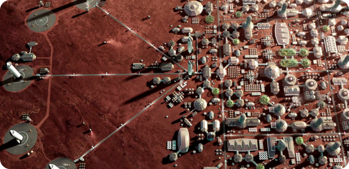
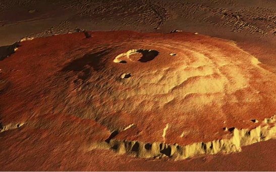
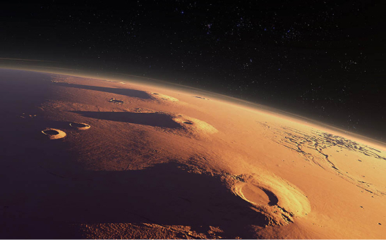
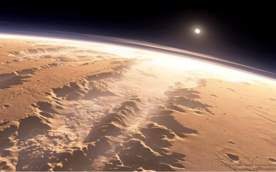

Добро пожаловать
на Марс
Планета контрастов, состоящая из множества глубоких каньонов, огромных вулканов и кратеров, которые когда-то содержали воду.

Колония Space Mars
Марс — планета контрастов, состоящая из множества глубоких каньонов, огромных вулканов и кратеров, которые когда-то содержали воду. Куда же первым делом отправится? Давайте попробуем разобраться вместе.

Предлагаем Вам провести незабываемый отпуск на планете Марс

Гора Олимп
Олимп — самый большой вулкан в Солнечной системе. Он имеет такие же размеры, как штат Аризона, а его высота составляет 25 километров, что делает этот потухший вулкан почти в три раза выше земной горы Эверест. Несмотря на колоссальные размеры природного объекта, исследователям можно будет легко подняться на вулкан хотя бы потому, что средний уклон Олимпа составляет всего 5 процентов. Достигнув вершины древнего вулкана, туристы смогут лицезреть впечатляющую впадину глубиной около 85 километров, которая образовалась при одном из древних марсианских извержений.
Вулканы Тарсис
Поднимаясь на Олимп и оглянувшись по сторонам, вы сможете увидеть и некоторые другие вулканы региона. По данным НАСА, на Тарсисе расположено целых 12 огромной высоты вулканов, расположенных на общей территории 4000 километров. Подобно Олимпу, эти вулканы, как правило, намного выше земных из-за низкой марсианской силы притяжения, что позволяет вулканам расти все выше и выше. Планетологи утверждают, что все эти вулканы могли извергаться в течение двух миллиардов лет или почти половину всей истории Марса.


Долина Маринера
К счастью для марсианских туристов, на Марсе находится не только самая большая возвышенность Солнечной системы, но и самый большой каньон. По данным НАСА, Долина Маринера простирается примерно на 3000 километров в длину, что делает каньон больше земного Гранд-Каньона почти в 3 раза.